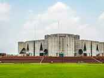

Bangladesh became an independent country in 1971.Most people in Bangladesh are Muslim. Bangladesh has an area of 57,320 mi² or (142,576 km²).Bangladesh has over 700 rivers that run through it. Bangladesh is referred to as "The Land of Six Seasons" with good cause.
